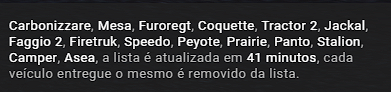
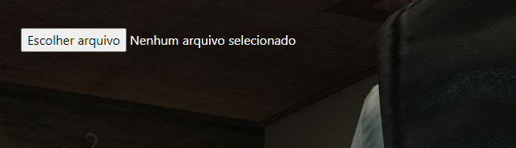

Primeiro passo
Tire o print da lista de carros, como mostra imagem abaixo:

Observação: Selecione apenas a lista, igual a imagem, e salve imagem.
Segundo passo
Entre no site, e clique no botão Escolher arquivo, e selecione a imagem salva.

Observação: após selecionar a imagem, espera a pagina carregar.